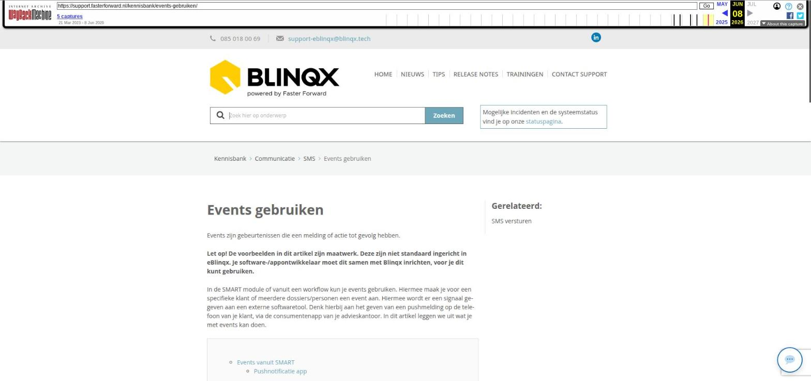

Events gebruiken

Tekstinhoud
Events gebruiken
Events zijn gebeurtenissen die een melding of actie tot gevolg hebben.
Let op! De voorbeelden in dit artikel zijn maatwerk. Deze zijn niet standaard ingericht in eBlinqx. Je software-/appontwikkelaar moet dit samen met Blinqx inrichten, voor je dit kunt gebruiken.
In de SMART module of vanuit een workflow kun je events gebruiken. Hiermee maak je voor een specifieke klant of meerdere dossiers/personen een event aan. Hiermee wordt er een signaal gegeven aan een externe softwaretool. Denk hierbij aan het geven van een pushmelding op de telefoon van je klant, via de consumentenapp van je advieskantoor. In dit artikel leggen we uit wat je met events kan doen.
Events vanuit SMART
Pushnotificatie app
Bericht in eigen klantportaal
Events vanuit workflow
Aansluiten op API
Events vanuit SMART
Het is mogelijk om in 'bulk' events aan te maken vanuit de SMART module binnen eBlinqx. In SMART kies je een selectie en de gewenste filters. Vervolgens kun je in één keer events aanmaken voor de meerdere personen en/of dossiers.
Pushnotificatie app
Wanneer er events aangemaakt worden, kan dit er voor zorgen dat er een pushnotificatie op de app van de consument verschijnt.
Bericht in eigen klantportaal
Heb je via de API een eigen klantportaal (dus niet de Digimap) laten ontwikkelen? Dan kan de ontwikkelaar van dit portaal de functionaliteiten aanpassen aan onze API punten omtrent events. Zo kan je bijvoorbeeld een bericht of melding voor je klant klaarzetten. Neem hiervoor contact op met de ontwikkelaar van je klantportaal.
Events vanuit workflow
Het is ook mogelijk om een event voor een specifieke klant aan te maken vanuit de workflow. Een stap in een workflow zorgt er dan voor dat er automatisch een event wordt aangemaakt. Dit kan bijvoorbeeld ook een bericht zijn in een klantportaal of een pushnotificatie in een app.
Wanneer je op de workflow op stap klikt waar een event aan verbonden is, zoals het opvragen van aanvullende stukken of een finaal akkoord van de hypotheek, wordt er een signaal gestuurd naar de app van de consument. Daarnaast kan er ook nog steeds een e-mail of SMS worden verstuurd.
De melding van de app van je advies wordt vervolgens getoond op de telefoon van de consument.
Aansluiten op API
Externe softwareontwikkelaars kunnen aansluiten op de API van eBlinqx. Hiervoor hebben ze echter wel toestemming van Blinqx nodig.
Lees dit artikel over onze API events om te zien welke informatie er opgehaald kan worden uit eBlinqx.
Laatste update: 15 oktober 2025
Was deze informatie nuttig?
Ja Nee